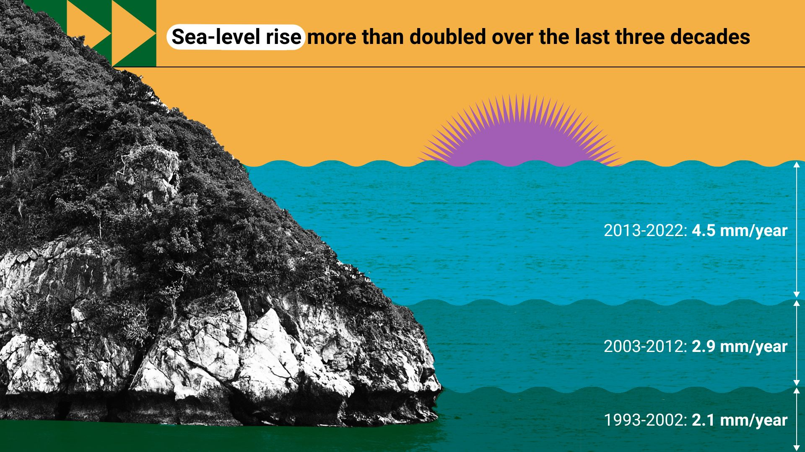

Climate Forecast 2025: 100% CHANCE of REGRET
“Water You Doing?”-Sea Levels, Climate Change, and Why We Should Care
If you've recently noticed the beach is getting a little closer to your tanning spot, you're not alone—and it's not just your towel creeping toward the tide. Sea levels are alarmingly on the rise... and no, this isn't a prank by Mother Nature to boost yacht sales. It's one of the more dramatic symptoms of global climate change, and it's happening faster than ever.
A Quick Dive into the Science

Sea levels are rising primarily because of two things: melting ice and expanding water. As global temperatures climb (thanks, greenhouse gases), glaciers and ice sheets—especially in Greenland and Antarctica—are melting at alarming rates. That water has to go somewhere, and spoiler alert: it's not evaporating into space. Second, warm water takes up more space than cold water. It's called thermal expansion, and it means the oceans are not just getting warmer—they're getting fatter. The result? The global sea level has risen about 8-9 inches (20-23 centimeters) since 1880. That might not sound like much unless you're a sandcastle, a sea turtle, or a human who lives on the coast. Which, by the way, includes hundreds of millions of people
How BAD can it actually get ??

If we keep burning fossil fuels like it's the Industrial Revolution all over again, scientists predict sea levels could rise by 2 to 7 feet (0.6 to 2 meters) by the end of this century. That's enough to make Miami a part-time Atlantis and to send major cities like New York and Jakarta scrambling for flotation devices. Rising seas also mean more flooding, more erosion, saltier freshwater, and increased damage from storms. Think of it as nature's way of yelling, “I told you so,” every time a coastal highway disappears underwater.
WHAT WE CAN DO ABOUT IT !!

Fighting sea level rise (and climate change in general) means cutting greenhouse gas emissions—fast. That includes: Switching to renewable energy (wind, solar, and no, not hamsters on wheels). Improving energy efficiency in homes, buildings, and transportation. Protecting and restoring ecosystems like mangroves and wetlands, which naturally absorb storm surges. Planning smarter for coastal development, which might mean building seawalls—or better yet, building elsewhere. And of course, voting for policies and leaders who take climate change seriously. It's one thing to change your light bulbs, but we also need to change the systems that make it easy to pollute and hard to adapt